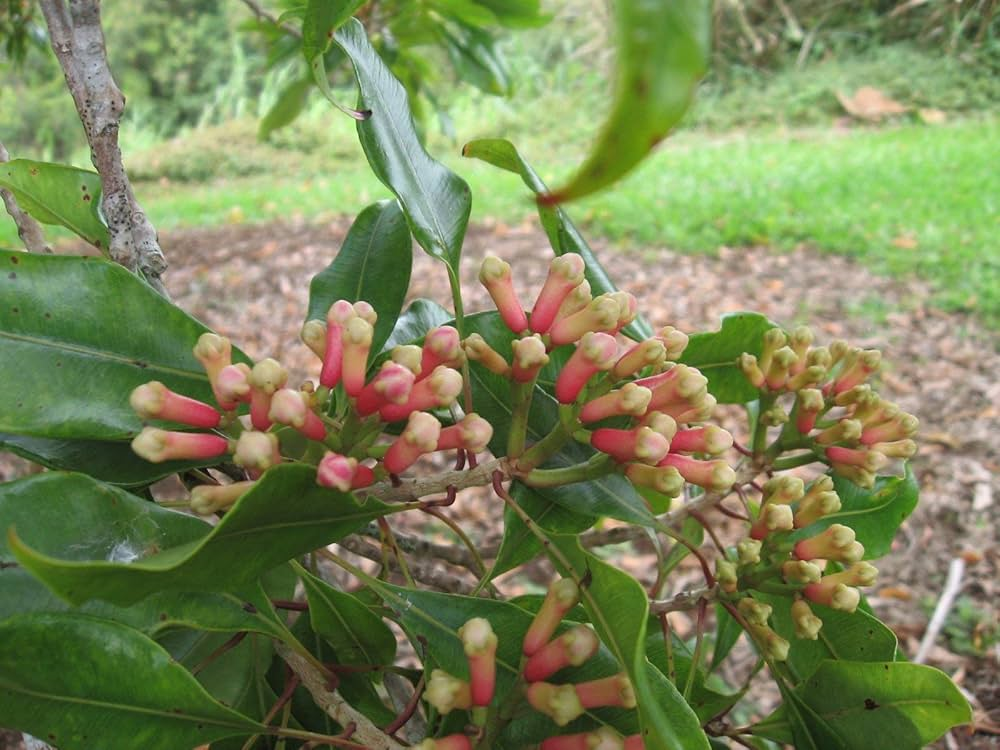

About
Cloves are the aromatic, dried flower buds of the Syzygium aromaticum tree, known for their strong, pungent, and sweet flavor. They are used widely in cooking, especially in baked goods, savory dishes, and beverages, and are also valued for their high eugenol content and various health benefits, although pure clove oil can be toxic in high doses. Major producers include Indonesia, India, and Madagascar, and the spice has a long history of use in traditional medicine.
Uses of Cloves:
- Add whole or ground cloves to curries, rice dishes, soups, and stews to enhance flavor.
- Use clove oil as a mouthwash to help reduce plaque, fight bacteria, and freshen breath.
- Anti-inflammatory: Eugenol, a compound in cloves, has anti-inflammatory properties that may help with conditions like arthritis and general joint pain.
- Clove oil caution: Be very careful when using clove essential oil, as it is highly concentrated. Use under supervision and do not overdo it, as it can be toxic in large amounts, especially for your liver.
Picture of Cloves:
Care of Cloves tree
Temperature: Clove plants thrive in temperatures between 70-95 circ 21-35 circ. They are sensitive to frost, so protect young plants and be aware that mature trees can only tolerate brief dips to around 50circ 10 circ .
Humidity: Maintain high humidity, between 70-90%.
Rainfall: The plants need around 59-79 inches 1,500-2,000 mm of rain annually, distributed evenly.
Soil and water Soil: Use rich, loamy soil that is slightly acidic, with a pH between 5.5-6.5.
Drainage: It is critical to ensure good drainage, as clove plants cannot tolerate waterlogged conditions.
Watering: Water consistently to keep the soil moist, but not soggy. During dry periods, provide deep watering 2-3 times a week rather than frequent shallow watering. Reduce waMulch: Apply organic mulch to help the soil retain moisture and regulate its temperature.
Sunlight
Provide full sun to partial shade. Young trees may benefit from some shade.
Fertilizing
Feed the plant with a moderate supply of fertilizer once or twice a year, preferably at the beginning of the growing season.tering during the rainy season.